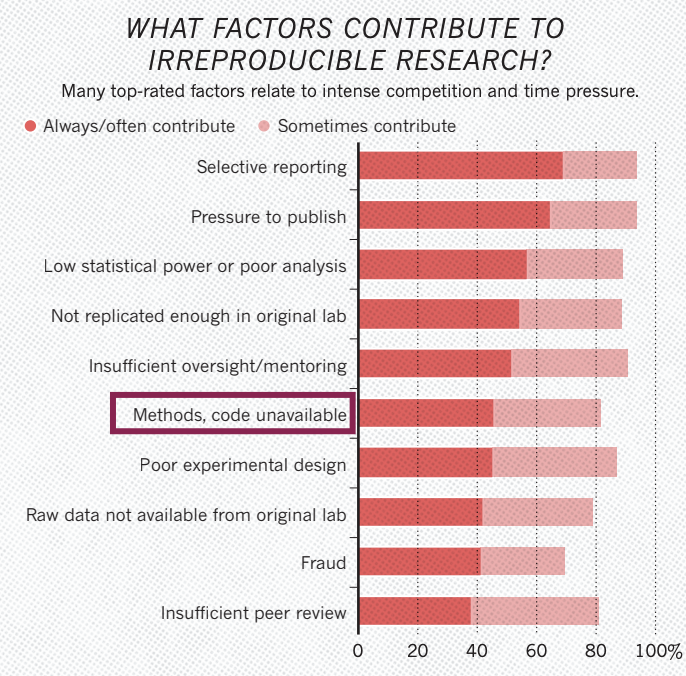

Links to different material, organizations, communities, conferences, articles
Do researchers develop software?
{Definition}: Research software
Software that is used to generate, process or analyse results that you intend to appear in a publication
Research software can be anything from a few lines of code written by yourself, to a professionally developed software package
Do researchers develop software?
Yes, they do!
Scientists create software as part of their reasearch
1 2 3 4 5
“As researchers are under immense pressure to maintain expertise in their research domains, they have little time to stay current with the latest software engineering practices (…) The lack of career incentives has occurred partially because the academic environment and culture have developed over hundreds of years, while software has only recently become important, in some fields over the last 60+ years, but in many others, just in the last 20 or fewer years (Foster, 2006).”
The quality of software can affect research
What are the potential consequences of developing bad quality software?
Reproducibility crisis

Code unavailable is one of the reasons why researchers can’t reproduce their articles
What does it means that the article is reproducible?
Reproducibility types
Empirical
Statistical
Computational: When detailed information is provided about code, software, hardware and implementation details.
The better the software we create, the more likely it is to reproduce research results using it
Organize files according to a prevailing convention.
Provide separation between data, methods and results expressing unambiguously the relationship between the three.
Specify the environment (+ reproducibility).
How data and code is shared?
Code Check
Reproducibility is consider a proof of Research Quality
The Turing Way
ROpenSci / pyOpenSci
Software Carpentry
There are many communities that can help researchers to improve software developing
US Research Software Sustainability Institute
Open source software
However, both institutions that support research (e.g., universities and national laboratories) and grant-making bodies that fund research (e.g., federal agencies and philanthropic organizations) often fail to recognize the central importance of software development and maintenance in conducting novel research (Goble, 2014)
What is a Research software engineer?
How does the existing ecosystem, based largely on the historical practices related to contributions to journal and conference papers and monographs, measure, store, and disseminate information about contributions to software?
• How does the existing ecosystem miss information about software contributions?
In some disciplines, such as those where monographs are typical products, there may be no formal guidelines. Author ordering is another challenge. The ordering of author names typically has some meaning, though the meaning varies between disciplines. S22
Aknowledging contribution in academic authors
:::footer The turing way / he Turing Way project illustration by Scriberia. Used under a CC-BY 4.0 licence. DOI: 10.5281/zenodo.3332807.
Aknowledging contribution in academic authors
It can change with the discipline
Plan an authorship strategy early on in a project
Encourage a culture of ethical and equitable authorship
Publishing different article types
Data, dashboards for communication, software… are all valuable research products
Data Papers
Methods Papers
Micropublishing
Software Papers
Registered Reports
Career paths
Software in general has not been well-cited (Howison & Bullard, 2016), in part because the scholarly culture has not treated software as something that should be cited, or in some cases, even mentioned. S22
RSE Survey 2022: Credit
The most common approaches are either to cite a paper about the software or to mention the software by name
Unfortunately, this practice leads to fewer trackable citations of the software, making it more difficult to judge its impact.
How authors credit software used in their research.
Journal of Open Source Software
pending
Recognizing the value of software: a software citation guide
A survey of the state of the practice for research software in the United States
Why is there no career for software developers in academia?
In 2012, the Software Sustainability Institute (SSI) organized the Collaborations Workshop (http://software.ac.uk/cw12) that addressed this question.
The work of the participants and of the SSI’s policy team led to the foundation of the UK RSE association and later to the Society of Research Software Engineering
US Research software engineer association
First conference October 16-18th, 2023, Chicago, IL
:::footer https://us-rse.org/usrse23/ :::
RSE survey 2022: Sources of funding
The role of research software engineer has been created in 2012 recognize the effort of software developers in academia
Some universities have created RSE groups to support reseach in their institutions
The US-RSE association links all the research software engineers in the US
pending
Data Science
Statistics
Machine learning
Software development / reproducibility
Data visualization
Databases and cloud computing
Some comments about dashboards
Some comments about databases
Databases can have versions, the same as the software
Databases can have their own DOI and be cited in isolation
Are RSE the version of data science for academia?
Summary
The scientific community should learn about reproducible practices
Track a complete history of your research and ensure the continuity of your work
Facilitate collaboration and review
Publish validated research
The scientific community should learn about reproducible practices
Write your papers efficiently
Get credit for your work fairly
¿Are we experiencing a cultural change?
The advert asks for: “A commitment to following the best [..] practices in science, such as [..] sharing of computer code and writing reproducible research reports, [..]sharing of data whenever feasible”
Have you come across job descriptions asking for such a commitment before?
— ReproHack(@ReproHack) 19 August 2020
¿Are we experiencing a cultural change?
From here there are all references. Decide what to keep.
Hettrick, S., Antonioletti, M., Carr, L., Chue Hong, N., Crouch, S., De Roure, D., … Sufi, S. (2014). UK Research Software Survey 2014 [Data set]. Zenodo. http://doi.org/10.5281/zenodo.14809


 :::footer https://github.com/dib-lab :::
:::footer https://github.com/dib-lab :::